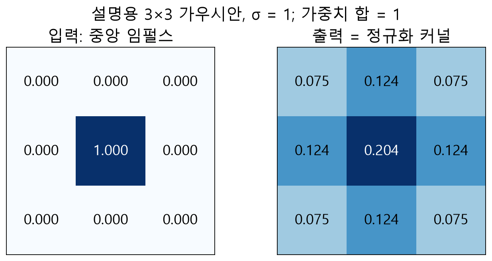

왜 가우시안 필터인가
가우시안 블러는 가까운 픽셀에 높은 가중치를, 멀리 있는 픽셀에 낮은 가중치를 적용하여 평활화합니다. 영상의 랜덤 노이즈를 완화할 수 있지만 미세한 점 결함이나 날카로운 경계 또한 약해질 수 있습니다.

G(x,y) = [1 / (2πσ²)] × exp(−(x²+y²)/(2σ²))
위 수식은 일반적인 2차원 가우시안 함수입니다. 실제 이산 커널과 경계 처리 동작은 라이브러리의 구현 계약을 따라야 합니다.
왜 가우시안 필터인가 · 핵심 동작
가우시안 블러는 가까운 화소에 큰 가중치를 주고 먼 화소에 작은 가중치를 주어 밝기를 평활화합니다. 이산 1차원 가중치는 거리 k에 대해 exp(-k²/(2σ²))에 비례하며 전체 합이 1이 되도록 정규화합니다. 가로와 세로로 분리해 적용하면 같은 2차원 가중 분포의 평활화 효과를 얻습니다.
왜 가우시안 필터인가 · 입력과 결과
σ가 커질수록 멀리 있는 화소의 상대적 영향이 커지고, 정해진 홀수 커널은 그 분포를 유한 범위에서 자릅니다. 따라서 σ와 폭을 함께 선택해야 합니다. 폭 1에서는 이웃을 섞지 않아 원본의 깊은 복사가 반환됩니다.
왜 가우시안 필터인가 · 좌표와 소유권
예를 들어 모든 픽셀이 7인 3×3 영상은 폭 3, σ 1로 처리해도 7입니다. 경계에서 가장 가까운 픽셀을 복제하고 가중치를 정규화하기 때문입니다. 반대로 중앙만 높은 점은 이웃으로 퍼지므로 1픽셀 결함을 약화시킬 수 있습니다.
왜 가우시안 필터인가 · 오류와 판단
평활화가 후속 임계값 분할을 항상 개선한다고 가정하지 마십시오. 잡음 감소와 작은 특징 손실을 원본 및 처리 후 영상에서 함께 확인하고, 필요한 경계 위치 정확도를 검토해야 합니다.